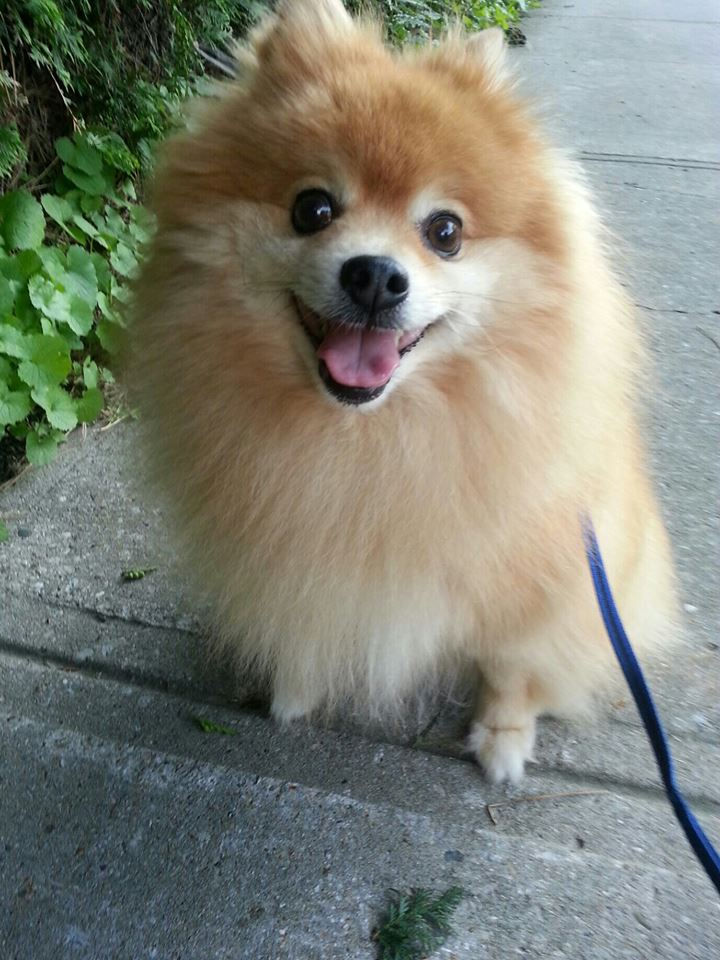

About Me

Hello, My name is Scott and this is my dog Pposic! By going through this page you will be able to estimate
my web dev skill level, so let me use this space to introduce my lovely dog.
Pposic is 15 years old, and the
picture to the left was probably taken when he was 10. But, he didn't change much since then! Just a bit more
white hairs and more sleepy hours but he is still beautiful and still kicking.
He loves eating so much that whenever he thinks we have some food in hands he starts to beg for it. Even when it's not a food!
He also likes to go out for a walk and whenever he gets out, people just love him! On average, we get about
3 "so cute!", 2 "can I pet your dog?", 2 "what kind of dog is he?" and 1 "oh my god!"
I have lot of pictures and videos of him, so come by and say hi for more! Thank you.